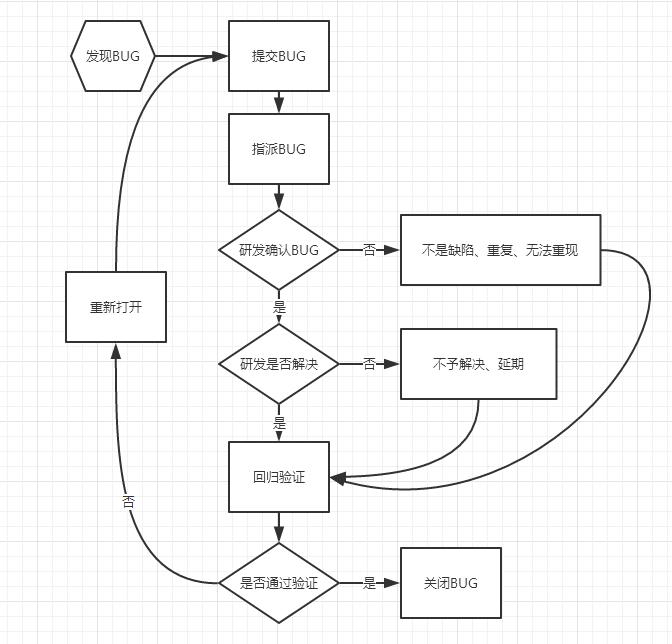

软件测试
软件测试原则
- 尽早介入
- 追溯到用户需求
- 程序员应该避免检查自己的程序，除了单元测试
- 设计测试用例应该考虑合法输入和不合法输入
- 2/8原则
- 对错误结果要进行一个确认过程（BUG可以复现）
- 制定严格的测试计划
- 完全测试是不可能的，测试需要终止
- 妥善保存测试过程中的所有文档
测试分类
按测试阶段分类
- 单元测试【开发】
- 集成测试【开发 or 测试】
- 系统测试【测试工程师】
- 验收测试【客户 or 产品经理】（正式验收测试、Alpha测试【模拟、前期、开发环境、开发测试人员不参与】、Beta测试【真实、生产环境、开发测试人员不参与】）
按测试技术划分
- 白盒测试【了解代码内部逻辑】
- 黑盒测试【不了解】
- 灰盒测试【黑白之间】
被测试对象是否运行划分
按不同的测试手段划分
按测试包含的内容划分
- 功能测试【=黑盒，点点点】
- 界面测试【UI界面】
- 安全测试【DDos、SQL注入、后门等】
- 兼容性测试【上下兼容、软硬兼容】
- 易用性测试【归纳在功能性测试中，检查界面及易用性，是否容易上手】
- 性能测试【包括压力和负载】
- 压力测试【非常规条件下，系统资源匮乏情况下进行测试】
- 负载测试【重负荷下的表现】
- 恢复测试【从灾备中恢复】
其他测试
- 冒烟测试【预发布测试，快速主干（主要功能）测试，正规测试之前】
- 回归测试【BUG修复后验证修复情况、BUG相关功能是否正常】
- 探索性测试【随机测试，不走正规路】（测试思维）
软件开发生命周期
- 问题的定义以及规划
- 需求分析/评审
- 软件设计阶段
- 软件编码
- 测试阶段
- 运行维护
测试工作流程
接触到哪些岗位人员：开发、产品、客服、实施/技术支持/现场、设计师
测试的工作流程：
- 需求分析：弄明白需求点
- 软件测试计划：文档（测试计划什么时候终止、达成目标、谁参与、任务划分、时间、出具的文档、资源的申请准备）
- 软件测试设计：写测试用例（评审、修改）
- 软件测试执行：冒烟->根据测试用例执行（提交bug、回归测试）
- 评估：测试完毕，出具测试报告（通过、打回）
测试用例设计方法
等价类方法：
- 把所有可能输入的数据，即程序的输入域划分为若干部分（子集），然后从每一个子集中选择少数具有 代表性的数据作为测试用例
- 有效等价类：对于程序来说是合理的、有意义的输入数据构成的集合
- 无效等价类：对程序来说是不合理的或无意义的输入数据构成的集合
边界值方法：
- 作为对等价类划分法的补充，正好等于边界值作为边界值，（刚好等于、刚好大于、刚好小于），与数字有关的等价类
- 需要考虑0和负数
错误推测法：
明知不可为而为之。列举出程序中所有可能有的错误和容易发生错误的情况，来设计测试用例
业务场景法：
模拟选定场景发生的事件，通过事件来触发某个动作的发生，观察事件的最终结果
测试用例
测试用例
某个特殊目标而编制的一组测试输入、执行条件以及预期结果，以便测试某个程序路径或核实是否满足某个特定需求
测试用例八大要素
用例编号、测试项目、测试标题、重要级别、预置条件、测试输入、操作步骤、预期结果、实际结果
BUG
BUG类型
代码错误、设计缺陷、界面优化、性能问题、配置相关、安装部署、安全相关、标准规范、测试脚本
BUG其他划分
功能类、界面类、性能类、易用性类、兼容性类、其他
BUG等级
- 致命错误：崩溃、死机、死循环、数据泄漏、金钱计算等
- 严重错误：功能不能实现、功能交互、非常规操作导致崩溃、外观难以接受、密码明文等
- 一般错误：次要功能不能实现、操作界面错误、查询（数据显示）错误、无输入限制、删除操作未提示等
- 细微错误：界面不规范、辅助说明不清、提示窗口文字不清楚、文字错误、改进建议

spoon browser sandbox
腾讯课堂柠檬班